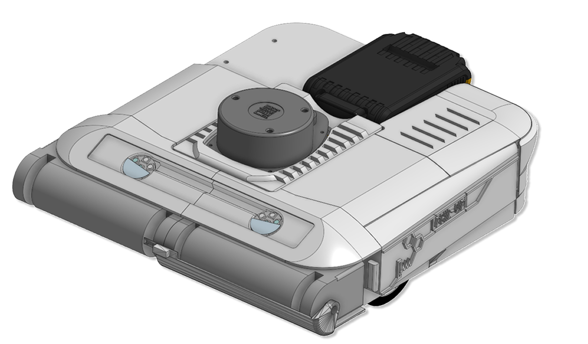
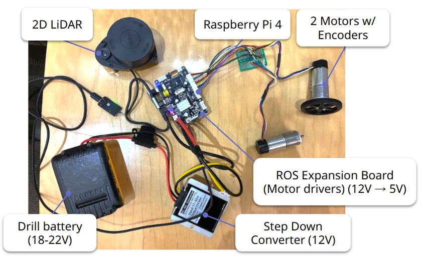

PHIL-UP: Magnetic Debris-Collecting Robot (ongoing)
Carnegie Mellon University · Fall 2026 · Team of 5
Skills
Overview
Metal debris in workshops and on construction sites causes puncture injuries, and cleaning it up is tedious. Magnet sweepers have to be pushed by hand, and robot vacuums can’t pick up metal. PHIL-UP addresses this with a magnetic pickup mechanism guided autonomously by LiDAR, running on easily swappable drill batteries.
What I'm working on
1) Product development
This course project put a heavy focus on building a product that would actually be marketable. We first surveyed 41 makers, shop staff, and theater and construction workers, which gave us clearer targets than we had initially proposed: under 20 in wide, over 90% of magnetic scrap collected, under $500. Great design tailor for real customer needs, not what engineers might think is a good solution.
2) Prototyped the chassis and magnet release mechanisms
Similar to my capstone, this was another chance to refine modular designs and improve on design for assembly. I learned a lot more about 3D-printing: how layer lines, connection methods, supports, etc. all affect the geometry and orientation of a part. I also focused on designing with injection molding in mind (if we do scale up!) by using draft angles and minimal overhangs.
all projects